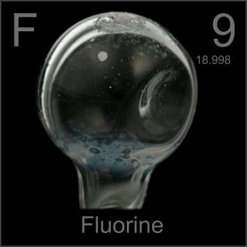

HOME
PREVIOUS
NEXT

Fluorine
Atomic Weight: 15.999
Density: 1.429 g/l
Melting Point: -218.3 °C
Boiling Point: -182.9 °C
Fluorine is a pale yellow gas that reacts violently with virtually everything, including glass. There's probably some in this fused quartz bulb (if it hasn't eaten its way out yet).